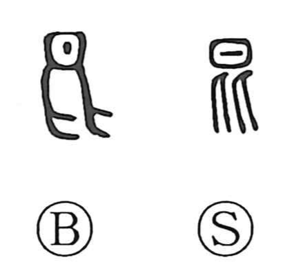

昆

Kun: | On: kon
insects ・ brothers ・ descendants
Explanation
Shirakawa reads 昆 as a pictograph: in early forms it sketches an insect, with auxiliary strokes indicating its legs. Because insects are tiny creatures that flock together, the graph came to suggest the image of many small beings clustering, a nuance that also underlies 混, “to be mixed.” Its appearance in 昆弟, “brothers,” is a phonetic loan based on the shared on reading kon rather than a literal reference to insects. That reading itself carried an old sense of “small,” as seen in 鯤, which refers to fish offspring.